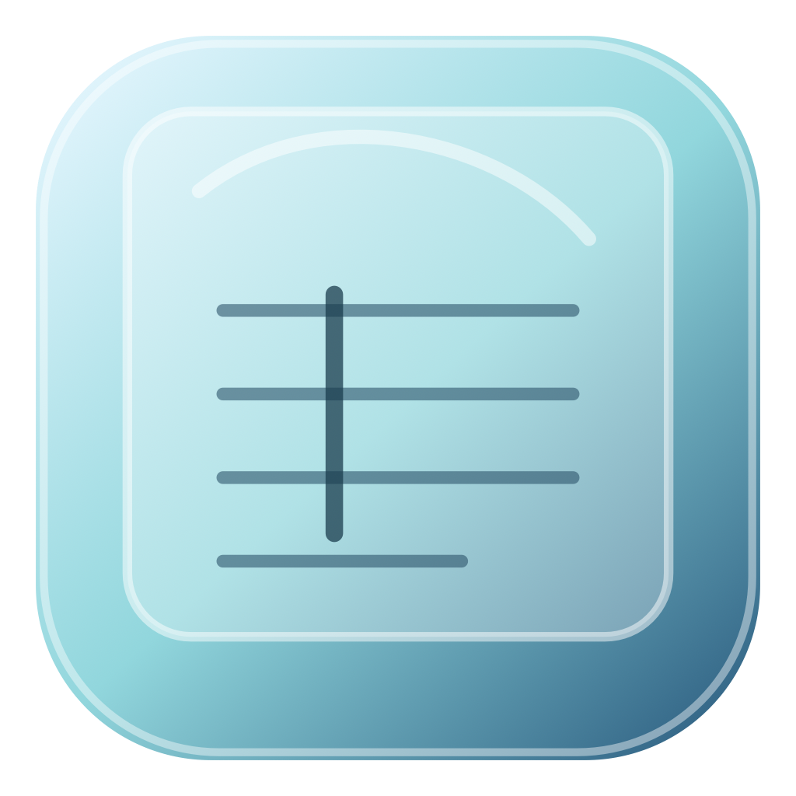

Simple Editor
A personal macOS editor for safe text, CSV, TSV, and fixed-width file editing.
Built For Careful File Editing
- Preserves file encoding and line endings when saving.
- Opens plain text, CSV, TSV, and fixed-width files.
- Includes search, replace, CSV filtering, and fixed-width safety checks.
v0.1.0 is Developer ID signed. Notarization is required before broad public distribution.